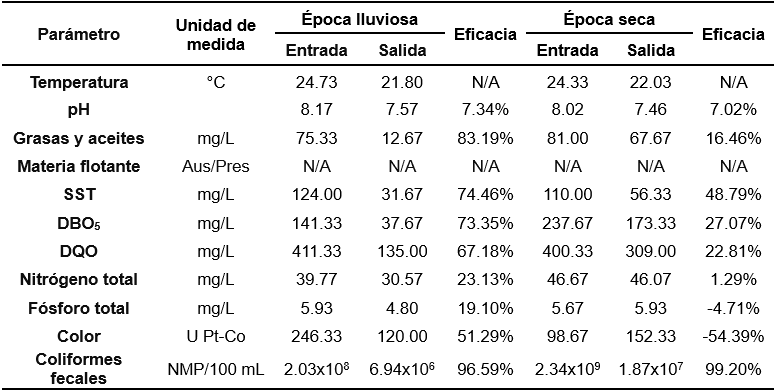
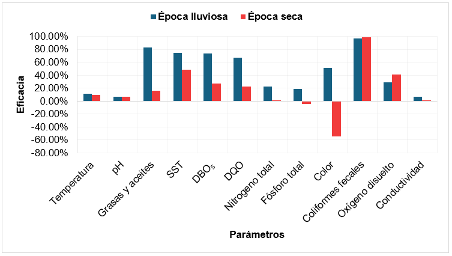
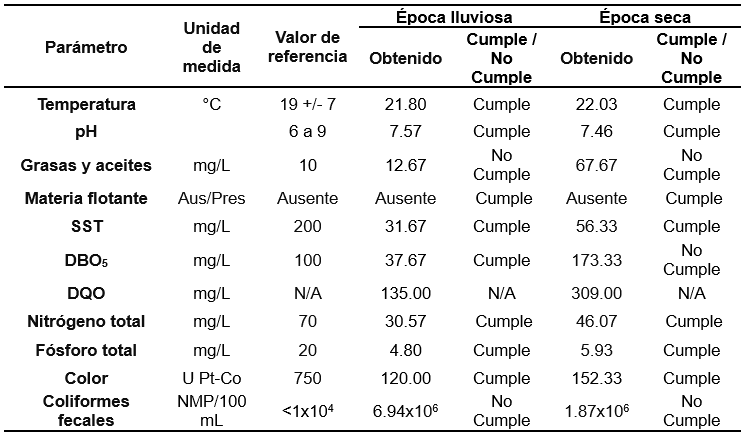
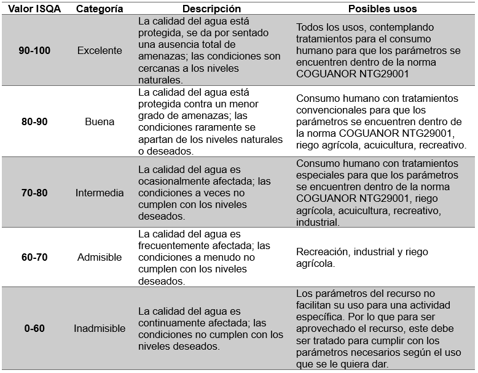
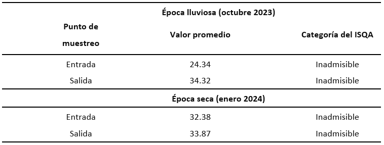
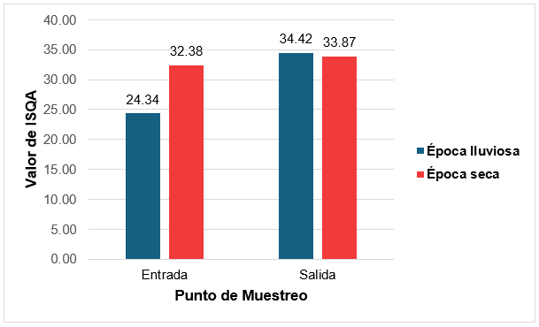

6 Evaluación de aguas residuales domésticas provenientes de una planta de tratamiento ubicada en la residencial San Ángel 4, zona 2, por medio del índice simplificado de calidad del agua (ISQA)
6.1 Resumen
Se evaluó la eficacia de una planta de tratamiento durante la época lluviosa y seca, comparando los valores medios de los puntos de muestreo con los límites máximos permisibles (LMP), a partir de un conjunto de parámetros regulados en el AG 236-2006 y que permiten realizar una clasificación en el ISQA.
Con apoyo del Laboratorio ECOQUIMSA se recolectó un total de 12 muestras entre ambas épocas, siendo los puntos de muestreo el afluente previo al ingreso a la planta de tratamiento y el efluente de descarga, que posteriormente analizaron en sus instalaciones.
Los resultados indican que los parámetros se encuentran dentro de los LMP, exceptuando “grasas y aceites” y “coliformes fecales” en ambas épocas, pero durante la época seca la “DBO5” supera el LMP. En las épocas en mención existe una eficacia de remoción positiva en la mayoría de los parámetros, y destaca una eficacia mayor a 95 % en la remoción de “coliformes fecales”, pero en la época seca la eficacia de remoción es negativa para “Nitrógeno total” y “color”, indicando que el valor de estos parámetros aumenta al pasar por la planta de tratamiento. Respecto del ISQA, en ambas épocas existe una diferencia mínima entre la entrada y salida, siendo clasificados como “Inadmisibles”, dando a entender que la calidad del agua continúa siendo inferior y disminuye la posibilidad de encontrar un uso para el cuerpo receptor.
6.2 Abstract
The efficiency of a treatment plant was evaluated during both the rainy and dry seasons by comparing the average values of sampling points with the Maximum Permissible Limits (MPL), based on a set of parameters regulated by AG 236-2006, which also allow for classification under the ISQA.
With support from the ECOQUIMSA Laboratory, a total of 12 samples were collected across both seasons. The sampling points were the influent (prior to entering the treatment plant) and the effluent (discharge point), which were subsequently analyzed at the laboratory’s facilities.
The results indicate that the parameters were within the MPL, with the exception of “Fats and Oils” and “Fecal Coliforms” in both seasons. However, during the dry season, “BOD₅” exceeded the MPL. In both seasons, there was a positive removal efficiency for most parameters, with removal of “Fecal Coliforms” standing out at over 95%. Nevertheless, during the dry season, the removal efficiency was negative for “Total Nitrogen” and “Color”, indicating that the values of these parameters increased after passing through the treatment plant.
Regarding the ISQA, in both seasons there was minimal difference between influent and effluent values, and the water was classified as “Unacceptable”, suggesting that the water quality remains poor and reduces the likelihood of any beneficial use for the receiving body.
6.4 Introducción
El tratamiento de las aguas residuales permite reducir la carga de contaminación que reciben los cuerpos receptores en Guatemala a diario. Las diferentes instalaciones encargadas de este tratamiento requieren un monitoreo anual para controlar su eficacia al momento de regular diferentes parámetros físicos, químicos y biológicos presentes en las aguas residuales. El Acuerdo Gubernativo 236-2006 “Reglamento de las descargas y reuso de aguas residuales y la disposición de lodos”, estipula los límites máximos permisibles de parámetros regulados que deben cumplir los entes generadores. En la Región Metropolitana de Guatemala, hay aproximadamente 1066 plantas de tratamiento, de las cuales la mayoría en caso de funcionar, lo hace deficientemente y sin cumplir la normativa de descarga establecida. Además, existen 2700 entes generadores de aguas residuales que descargan su efluente sin mayor monitoreo ni control por las autoridades correspondientes (Funcagua, 2022).
6.5 Artículo
6.5.1 Objetivo
Se realizó una caracterización de las aguas residuales de origen doméstico provenientes de una residencial ubicada en la ciudad de Guatemala para comparar con los límites máximos permisibles de los parámetros regulados en el AG 236-2006 y determinar la eficacia del sistema de tratamiento que emplean en época lluviosa y época seca. Utilizando el Índice Simplificado de Calidad del Agua (ISQA) se calculó su valor y se clasificó tanto el afluente como el efluente de las instalaciones de tratamiento, para posteriormente comparar.
6.5.2 Metodología
Se basó en un enfoque cuantitativo del análisis de la calidad del agua y parámetros de estudio establecidos en el artículo 24 del AG 236-2006, orientados en aguas residuales de origen doméstico sin tomar en cuenta los relacionados a metales pesados, adicionando los parámetros requeridos para el cálculo del ISQA y su respectiva clasificación. La recolección de muestras se llevó a cabo en un punto previo al ingreso de las aguas residuales a la planta de tratamiento y en un punto en la descarga (2 puntos de muestreo en total), realizado tanto en la época lluviosa como en la época seca. Se efectuaron 3 repeticiones para cada punto de muestreo y en cada época, dando un total de 12 muestras recolectadas (6 por cada época). La planta de tratamiento pertenece a Residencial San Ángel 4, y está ubicada en los límites de la zona 2 de la ciudad de Guatemala que colindan con los de Chinautla.
6.5.3 Resultados
Con base en los parámetros del Acuerdo Gubernativo 236-2006, la planta de tratamiento de agua residual en estudio se encuentra ubicada en una zona residencial; en consecuencia, las aguas residuales domésticas no contienen metales pesados y por tal razón los parámetros del Acuerdo Gubernativo 236-2006 que son muestreados y estudiados son: temperatura, pH, grasas y aceites, materia flotante, sólidos suspendidos totales, DBO5, DQO, nitrógeno total, fósforo total, color y coliformes fecales. Para el cálculo del ISQA los parámetros muestreados y estudiados son temperatura, DQO, sólidos suspendidos totales, conductividad eléctrica y oxígeno disuelto.
Cuadro 6.1: Eficacia de la planta de tratamiento en épocas de estudio
Nota. Elaboración propia.
Figura 6.1: Gráfica de comparación de la eficacia entre las épocas de estudio
Nota. Elaboración propia.
Cuadro 6.2: Cumplimiento de parámetros para etapa II del AG 236-2006 durante épocas de estudio
Nota. Elaboración propia.
Cuadro 6.3: Clasificación de la calidad de agua del ISQA
Nota. INSIVUMEH, 2021.
Cuadro 6.4: Valores calculados del ISQA para épocas de estudio
Nota. Elaboración propia.
Figura 6.2: Gráfica de comparación del ISQA promedio en épocas de estudio
Nota. Elaboración propia.
6.5.4 Interpretación de resultados
Para la época lluviosa la mayoría de parámetros cumple con los límites máximos permisibles (LMP) de la etapa II, a excepción de “grasas y aceites” y “coliformes fecales”. Se observó que la mayor eficacia de remoción fue de 96.59 % en los “coliformes fecales”, señalando que la planta tiene un alto grado de efectividad, pero no alcanza los límites establecidos en el acuerdo. La mayoría de los parámetros presentaron una eficacia de remoción superior al 50 %. exceptuando pH, nitrógeno total, fósforo total, oxígeno disuelto y conductividad eléctrica; esto permite observar que aunque los valores de eficacia son bajos en la mayoría de los parámetros, estos cumplen con los requerido en la etapa actual. Durante la misma época se calculó en la entrada a la planta de tratamiento un ISQA con valor promedio igual a 24.34 y en la salida un valor promedio igual a 34.42, lo que significa un ligero aumento de la calidad del agua.
En la época seca casi todos los parámetros cumplen, exceptuando “grasas y aceites”, “DBO5” y “coliformes fecales”. Se observó que la mayor eficacia de remoción fue de 99.20 % en los “coliformes fecales. Los demás parámetros presentan menos de un 50 % de eficacia en la remoción, destacando que los parámetros de “fósforo total” y “color” tienen un porcentaje de eficacia de remoción negativa que indica un valor medio en la salida superior al valor medio de la entrada y no cumple con la etapa actual. Para la época seca, en la entrada se calculó un valor promedio de ISQA igual a 32.38 y en la salida un valor promedio igual a 33.87.
Un valor elevado de grasas y aceites puede disminuir la eficacia de una planta de tratamiento, mientras que valores elevados de coliformes fecales pueden indicar la presencia de patógenos entéricos y contaminar al cuerpo receptor. También, un valor elevado en la DBO5 puede afectar los procesos de degradación de la materia orgánica (Fernández & Volpedo, 2020; Sierra, 2011).
Es importante aclarar que este índice se utiliza principalmente en fuentes de agua potable; aunque continúa siendo una herramienta que se determina fácilmente, requiere de pocos parámetros y puede correlacionarse con otros.
La calificación del ISQA obtenida en ambas épocas indica que la calidad del agua no es la adecuada para asignar un posible reuso, aun si se cumplen los LMP del AG 236-2006, situando en una categoría de inadmisible la calidad del agua en la salida de la planta de tratamiento.
6.6 Conclusiones
Tanto para la época lluviosa como para la época seca, la mayoría de los parámetros cumple con los límites máximos permisibles de la etapa II, establecidos en el Acuerdo Gubernativo 236-2006, exceptuando “grasas y aceites” y “coliformes fecales”. Únicamente, en la época seca otro parámetro que se adiciona a las excepciones es el de “DBO5”. Adicionalmente, se debe destacar que en ambas épocas existe una alta efectividad en la remoción de los coliformes, disminuyendo los valores en la entrada en un 95 %, luego de pasar por la planta de tratamiento.
Para la época lluviosa, se calculó un ISQA con valor promedio de 24.34 en la entrada a la planta de tratamiento y de 34.42 en la salida; lo que significa un ligero aumento de la calidad del agua. Para la época seca, se calculó un valor promedio de ISQA igual a 32.38 y 33.87 en la salida.
Para las dos épocas, ambos puntos fueron clasificados en la categoría del ISQA como “Inadmisibles”. El cuerpo de agua donde la planta de tratamiento descarga, ve afectada su calidad de agua de manera negativa, de manera que no puede tener un posible uso.
6.7 Recomendaciones
Continuar realizando la caracterización del afluente y efluente, en ambas épocas, comparando los resultados con los valores fijados en la etapa vigente del AG 236-2006.
Mejorar la accesibilidad del personal responsable de mantenimiento de la planta, principalmente para el ingreso y egreso a las instalaciones; simultáneamente incorporar accesos para la recolección de muestras.
Valorar la implementación de un proceso de tratamiento secundario que permita mantener la carga biológica dentro de los límites establecidos en el AG 236-2006.
Programar la elaboración y ejecución de un proyecto de mejoramiento, control y fortalecimiento de la planta, en coordinación con la participación de vecinos, Instituto de Fomento Municipal y Municipalidad de Guatemala.
6.8 Referencias
[1] Fernández, A. y Volpedo, A. (2020). Indicadores físico-químicos: ¿qué, cómo y cuánto reflejan la calidad del agua?. En Domínguez, E., Giorgi, A. & Gómez, N (Eds.). La bioindicación en el monitoreo y evaluación de los sistemas fluviales de la Argentina: Bases para el análisis de la integridad ecológica (pp. 27-39). Eudeba.
[2] Fundación para la Conservación del Agua en la Región Metropolitana de Guatemala. (2022). Informe del estado del agua de la Región Metropolitana de Guatemala 2022: el agua nos une. Guatemala.
[3] Instituto Nacional de Sismología, Vulcanología, Meteorología e Hidrología de Guatemala. (2021). Boletín Anual No. 24 de Calidad del Agua, (24), 10-14. https://insivumeh.gob.gt/?p=56979
[4] Sierra, C. (2011). Calidad del agua. Evaluación y diagnóstico. Ediciones de la U.
[5] Torres, P., Cruz, C., & Patiño, P. (2009). Índices de calidad de agua en fuentes superficiales utilizadas en la producción de agua para consumo humano. Una revisión crítica. Revista Ingenierías Universidad de Medellín, 8(15), 79-94.